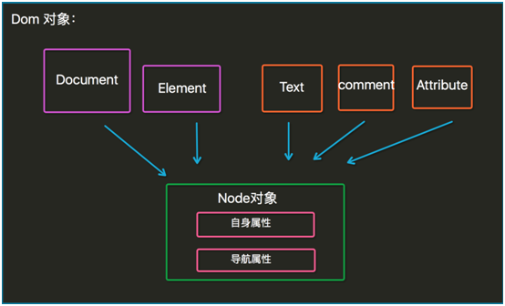
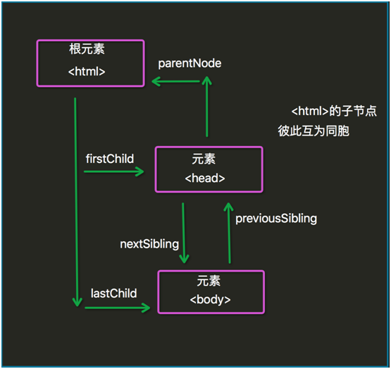

原文连接:https://www.cnblogs.com/mayi0312/p/11152071.html
一、简介
JavaScript一种直译式脚本语言，是一种动态类型、弱类型、基于原型的语言，内置支持类型。它的解释器被称为JavaScript引擎，为浏览器的一部分，广泛用于客户端的脚本语言，最早是在HTML（标准通用标记语言下的一个应用）网页上使用，用来给HTML网页增加动态功能。
二、历史
·1992年Nombas开发出C-minus-minus（C--）的嵌入式脚本语言（最初绑定在CEnvi软件中），后将其改名为ScriptEase（客户端执行的语言）。
·Netscape（网景）接收Nombas的理念，（Brendan Eich）在其Netscape Navigator 2.0产品开发出一套livescript的脚本语言，Sun和Netscape共同完成，后改名叫JavaScript。
·微软随后模仿在IE3.0的产品中搭载了一个JavaScript的克隆版叫Jscript。
·为了统一三家，ECMA（欧洲计算机制造协会）定义了ECMA-262规范，国际标准化组织及国际电工委员会（ISO/IEC）也采纳ECMAScript作为标准（ISO/IEC-16262）。从此，Web浏览器就开始努力（虽然有着不同程序的成功和失败）将ECMAScript作为JavaScript实现的基础。ECMAScript是规范。
三、ECMAScript
尽管ECMAScript是一个重要的标准，但它并不是JavaScript唯一的部分，当然，也不是唯一被标准化的部分。实际上，一个完整的JavaScript实现是由以下3个不同部分组成的：
·核心（EMCAScript）
·文档对象模型（DOM）Document object model（整合js, css, html）
·浏览器对象模型（BOM）Broswer object model（整合js和浏览器）
JavaScript在开发中绝大多数情况是基于对象的，也是面向对象的。

简单地说，ECMAScript描述了以下内容：
·语法
·类型
·语句
·关键字
·保留字
·运算符
·对象（封装 继承 多态）基于对象的语言，使用对象
四、JavaScript基础
1.变量
变量是用于存储信息的“容器”。
var x=5;
var y=6;
var z=x+y;就像代数那样
x=5
y=6
z=x+y
在代数中，我们使用字母（比如x）来保存值（比如5）。
通过上面的表达式z=x+y，我们能够计算出z的值为11。
在JavaScript中，这些字母被称为变量。
与代数一样，JavaScript变量可用于存放值（比如x=5）和表达式（比如z=x+y）。
变量可以使用短名称（比如x和y），也可以使用描述性更好的名称（比如age, sum, totalvolume）。
·变量必须以字母开头
·变量也能以$和_符号开头（不推荐）
·变量名称对大小写敏感
2.基础规范
·每行结束可以不加分号，没有分号时会以换行符作为每行的结束。
a=1;b=2;
a=1 b=2;//------错误
//不推荐
a=1
b=2
//推荐
a=1;
b=2;
{
a=1;
b=2;
//推荐加tab
a=1;
b=2;
}·注释：支持多行注释（/* 注释内容 */）和单行注释（//注释内容）
·使用{}来封装代码块
3.常量和标识符
常量：直接在程序中出现的数据值
标识符：
a.由不以数字开头的字母、数字、下划线（_）、美元符号（$）组成
b.常用于表示函数、变量等的名称
c.例如：_abc, $abc, abc, abc123是标识符，而1abc不是
d.JavaScript语言中代表特定含义的词称为保留字，不允许程序再定义为标识符
ECMA v3标准保留的JavaScript的关键字
|
break |
case |
catch |
continue |
default |
|
delete |
do |
else |
false |
finally |
|
for |
function |
if |
in |
instanceof |
|
new |
null |
return |
switch |
this |
|
throw |
true |
try |
typeof |
var |
|
void |
while |
with |
|
|
4.数据类型
值类型（基本类型）：字符串（String）、数字（Number）、布尔（Boolean）、空（Null）、未定义（Undefined）、Symbol。
引用数据类型：对象（Object）、数组（Array）、函数（Function）。
注：Symbol是ES6引入了一种新的原始数据类型，表示独一无二的值。
JavaScript拥有动态类型
JavaScript拥有动态类型。这意味着相同的变量可用作不同的类型：
var x; // x 为 undefined
var x = 5; // 现在 x 为数字
var x = "MaYi"; // 现在 x 为字符串JavaScript字符串
字符串是存储字符（比如“MaYi”）的变量。
字符串可以是引号中的任意文本。可以使用单引号或双引号：
var carname="Volvo XC60";
var carname='Volvo XC60';可以在字符串中使用引号，只要不匹配包围字符串的引号即可：
var answer="It's alright";
var answer="He is called 'Johnny'";
var answer='He is called "Johnny"';JavaScript数字
JavaScript只有一种数字类型。数字可以带小数点，也可以不带：
var x1=34.00; //使用小数点来写
var x2=34; //不使用小数点来写极大或极小的数字可以通过科学（指数）计数法来书写：
var y=123e5; // 12300000
var z=123e-5; // 0.00123JavaScript布尔
布尔（逻辑）只能有两个值：true或false。
var x=true;
var y=false;布尔常用在条件测试中。
JavaScript数组
下面的代码创建名为cars的数组：
var cars=new Array();
cars[0]="Saab";
cars[1]="Volvo";
cars[2]="BMW";或者
var cars=new Array("Saab","Volvo","BMW");或者
var cars=["Saab","Volvo","BMW"];数组下标是基于零的，所以第一个是[0]，第二个是[1]，以此类推。
JavaScript对象
对象由花括号分隔。在括号内部，对象的属性以名称和值对的形式（name: value）来定义。属性由逗号分隔：
var person={firstname:"John", lastname:"Doe", id:5566};上面例子中的对象（person）有三个属性：firstname、lastnamet和id。
空格和折行无关紧要。声明可横跨多行：
var person={
firstname : "John",
lastname : "Doe",
id : 5566
};对象属性有两种寻址方式：
name=person.lastname;
name=person["lastname"];Undefined类型
Undefined类型只有一个值，即undefined。当声明的变量未初始化时，该变量的默认值是undefined。当函数无明确返回值时，返回的也是值“undefined”。
Null类型
Null类型也只有一个值，即null。值undefined实际上是从值null派生来的，因此ECMAScript把它们定义为相等的。
尽管这两个值相等，但它们的含义不同。undefined是声明了变量但未对其初始化时赋予该变量的值，null则用于表示尚未存在的对象。如果函数要返回的是对象，那么找不到该对象时，返回的通常是null。
可以通过将变量的值设置为null来清空变量。
cars=null;
person=null;声明变量类型
声明变量时，可以使用关键词“new”来声明其类型：
var carname=new String;
var x= new Number;
var y= new Boolean;
var cars= new Array;
var person= new Object;数据类型转换
JavaScript属于松散类型的程序语言
变量在声明的时候并不需要指定数据类型
变量只有在赋值的时候才会确定数据类型
表达式中包含不同类型数据则在计算过程中会强制进行类别转换
数字+字符串：数字转换为字符串
数字+布尔值：true转换为1，false转换为0
字符串+布尔值：布尔值转换为字符串“true”或“false”强制类型转换函数
函数parseInt：强制转换成整数
例如：
parseInt(“6.12”) 6
parseInt(“12a”) 12
parseInt(“1a2”) 1
函数parseFloat：强制转换成浮点数
parseFloat(“6.12”) 6.12
函数eval：将字符串强制转换为表达式并返回结果
eval(“1+1”) 2
eval(“1<2”) true类型查询函数（typeof）
ECMAScript提供了typeof运算符来判断一个值是否在某种类型的范围内。可以用这种运算符判断一个值是否表示一种原始类型：如果它是原始类型，还可以判断它表示哪种原始类型。
函数typeof：查询数值当前类型（string / number / boolean / object）
例如typeof(“test”+3) “string”
例如typeof(null) “object”
例如typeof(true+1) “number”
例如typeof(true-false) “number”五、ECMAScript运算符
1.ECMAScript算数运算符
加（+）、减（-）、乘（*）、除（/）、求余（%）
+除了可以表示加法运算外还可以用于字符串的连接。例如：”abc”+”def” “abcdef”
-除了可以表示减号外还可以表示负号。例如：x=-y递增（++）、递减（--）
假如x=2，那么x++表达式执行后的值为3，x--表达式执行后的值为1
i++相当于i=i+1，i--相当于i=i-1
递增和递减运算符可以放在变量前也可以放在变量后：--i
var i=1;
console.log(i++);
console.log(++i);
console.log(i--);
console.log(--i);一元加减法：
var a=1;
var b=1;
a=-a; //a=-1;
var c=”10”;
alert(typeof(c)); //string
c=+c; //类型转换
alert(typeof(c)); //number
var d=”mayi”;
d=+d;
alert(d); //NaN：属于Number类型的一个特殊值，当遇到将字符串转成数字无效时，就会得到一个NaN数据
alert(typeof(d)); //number
var n=NaN;
alert(n>3); //false
alert(n<3); //false
alert(n==3); //false
alert(n==NaN); //false
alert(n!=NaN); //true。NaN参与的所有的运算都是false，除了!=2.ECMAScript逻辑运算符
等于（==）、不等于（!=）、大于（>）、小于（<）、大于等于（>=）、小于等于（<=）
与（&&）、或（||）、非（!）
1&&1 1
1&&0 0
0&&1 0
0&&0 0
1||1 1
1||0 1
0||1 1
0||0 0
!0 1
!1 0逻辑AND运算符（&&）
逻辑AND运算的运算数可以是任何类型的，不止是布尔值。
如果某个运算数不是原始的布尔类型，逻辑AND运算并不一定返回布尔值：
·如果某个运算数是null，返回null。
·如果某个运算数是NaN，返回NaN。
·如果某个运算数是undefined，返回undefined。
逻辑OR运算符（||）
与逻辑AND运算符相似，如果某个运算数不是布尔值，逻辑OR运算并不一定返回布尔值，逻辑OR运算并不一定返回布尔值。
3.ECMAScript赋值运算符
赋值 =
JavaScript中“=”代表赋值，两个等号“==”表示判断是否相等
例如，x=1表示给x赋值为1
if(x==1){...} 程序表示当x与1相等时
配合其他运算符形成的简化表达式
例如i+=1相当于i=i+1，x&=y相当于x=x&y实例：
var b1 = 2 == "2";
var b2 = 2 === "2";
var b3 = 4 != "4";
var b4 = 4 !== "4";
var a = 2;
var b = 4;
var c1 = a < b | --b > --a;
var c2 = a < b || --b > --a;
var c3 = a < b && --b > --a;
var c4 = a < b & --b > --a;
console.log(b1); //true
console.log(b2); //false
console.log(b3); //false
console.log(b4); //true
console.log(c1); //1
console.log(c2); //true
console.log(c3); //true
console.log(c4); //14.ECMAScript等性运算符
执行类型转换的规则如下：
·如果一个运算数是布尔值，在检查相等性之前，把它转换成数字值。false转换成0，true为1。
·如果一个运算数是字符串，另一个是数字，在检查相等性之前，会尝试把数字转换成字符串。
·如果一个运算数是对象，另一个是字符串，在检查相等性之前，会尝试把对象转换成字符串。
·如果一个运算数是对象，另一个是数字，在检查相等性之前，会尝试把对象转换成数字。
在比较时，该运算符还遵守下列规则：
·值null和undefined相等。
·在检查相等性时，不能把null和undefined转换成其他值。
·如果某个运算数是NaN，等号将返回false，非等号将返回true。
·如果两个运算数都是对象，那么比较的是它们的引用值。如果两个运算数指向同一对象，那么等号返回true，否则两个运算数不等。
|
表达式 |
值 |
|
null == undefined |
true |
|
“NaN” == NaN |
false |
|
5 == NaN |
false |
|
NaN == NaN |
false |
|
NaN != NaN |
true |
|
false == 0 |
true |
|
true == 1 |
true |
|
true == 2 |
false |
|
undefined == 0 |
false |
|
null == 0 |
false |
|
“5” == 5 |
true
|
5.ECMAScript关系运算符
var bResult = "Blue" < "alpha";
alert(bResult); //输出 true在上面的例子中，字符串“Blue”小于“alpha”，因为字母B的字符码是66，字母a的字符码是97。
比较数字和字符串
另一种棘手的状况发生在比较两个字符串形式的数字时，比如：
var bResult = "25" < "3";
alert(bResult); //输出 true上面这段代码比较的是字符串“25”和“3”。两个运算数都是字符串，所以比较的是它们的字符码（“2”的字符码是50，“3”的字符码是51）。
不过，如果把某个运算数改为数字：
var bResult = "25" < 3;
alert(bResult); //输出 false这里，字符串“25”将被转换成数字25，然后与数字3进行比较，结果不出所料。
总结：
比较运算符两侧如果一个是数字类型，一个是其他类型，会将其类型转换成数字类型。
比较运算符两侧如果都是字符串类型，比较的是最高位的asc码，如果最高位相等，继续取第二位比较。
6.Boolean运算符
var temp=new Object();// false;[];0; null; undefined;object(new Object();)
if(temp){
console.log("true")
}else {
console.log("false")
}7.全等号和非全等号
等号和非等号的同类运算符是全等号和非全等号。这两个运算符所做的与等号和非等号相同，只是它们在检查相等性前，不执行类型转换。
六、控制语句
1.if控制语句
if-esle 基本格式：
if(表达式){
语句1;
......
}else{
语句2;
......
};
功能说明：
如果表达式的值为true，则执行语句1，否则执行语句2例子：
var x= (new Date()).getDay();
//获取今天的星期值，0为星期天
var y;
if((x==6) || (x==0)) {
y="周末";
}else{
y="工作日";
}
alert(y);if可以单独使用：
if语句嵌套格式：
if(表达式1){
语句1;
}else if(表达式2){
语句2;
}else if(表达式3){
语句3;
}else{
语句4;
}例子：
var x= (new Date()).getDay();
//获取今天的星期值，0为星期天
var y;
if(x==1){
y="星期一";
}else if(x==2){
y="星期二";
}else if(x==3){
y="星期三";
}else if(x==4){
y="星期四";
}else if(x==5){
y="星期五";
}else if(x==6){
y="星期六";
}else{
y="星期日"
}
alert(y);2.switch选择控制语句
switch基本格式：
switch(表达式){
case 值1:语句1;break;
case 值2:语句2;break;
case 值3:语句3;break;
default:语句4;
}例子：
var x= (new Date()).getDay();
//获取今天的星期值，0为星期天
var y;
switch (x){
case 1:y="星期一";break;
case 2:y="星期二";break;
case 3:y="星期三";break;
case 4:y="星期四";break;
case 5:y="星期五";break;
case 6:y="星期六";break;
default:y="星期日";
}
alert(y);switch比else if结构更加简洁清晰，使程序可读性更强，效率更高。
首先要看一个问题，if语句适用范围比较广，只要是boolean表达式都可以用if判断；而switch只能对基本类型进行数值比较。两者的可比性就仅限在两个基本比较的范围内。
说到基本类型的数值比较，那当然要有两个数。然后重点来了——
if语句每一句都是独立的，看下面的语句：
if(a==1){
......
}else if(a==2){
......
}
这样a要被讲稿寄存器两次，1和2分别被读入寄存器一次。于是你是否发现其实a读两次是有点多余的，在你全部比较完之前只需要一次读入寄存器就行了，其余都是额外开销。但是if语句必须每次都把里面的两个数从内存拿出来读到寄存器，它不知道你其实比较的是同一个a。
于是switch case就出来了，把上面的改成switch case版本：
switch(a){
case 0:......;break;
case 1:......;break;
}
总结：
1.switch用来根据一个整型值进行多路分支，并且编译器可以对多路分支进行优化。
2.switch-case只将表达式计算一次，然后将表达式的值与每个case的值比较，进而选择执行哪一个case的语句块。
3.if...else的判断条件范围较广，每条语句基本上独立的，每次判断时条件都要加载一次。
所以在多路分支时用switch比if...else if...else结构要效率高。3.for循环控制语句
for循环基本格式：
for(初始化;条件;增量){
语句1;
......
}
功能说明：
实现条件循环，当条件成立时，执行语句1，否则跳出循环休。例子：
for(var i=1;i<=6;i++){
document.write("<H"+i+">hello</H"+i+">");
}
var arr=[1, "hello", true];
for(var j in arr){
console.log(j);
console.log(arr[j]);
}注意：for j in不推荐使用
4.while循环控制语句
while循环基本格式：
while(条件){
语句1;
......
}
功能说明：
功能和for类似，当条件成立循环执行语句花括号{}内的语句，否则跳出循环。var i=1;
while (i<=6){
document.write("<H"+i+">hello</H"+i+">");
i++;
}5.异常处理
try{
...... //这段代码从上往下运行，其中任何一个语句抛出异常该代码块就结束运行
}catch (e){
...... //如果try代码块中抛出了异常，catch代码块中的代码就会被执行。
...... //e是一个局部变量，用来指向Error对象或者其他抛出的对象
}finally{
...... //无论try中代码是否有异常抛出（甚至是try代码块中有return语句），finally代码块中始终会被执行。
}注：主动抛出异常throw Error(“xxx”)
七、ECMA对象
从传统意义上来说，ECMAScript并不真正具有类。事实上，除了说明不存在类，在ECMA-262中根本没有出现“类”这个词。ECMAScript定义了“对象定义”，逻辑上等价于其他程序设计语言中的类。
var o=new Object();
1.对象的概念与分类：
·由ECMAScript定义的本地对象，独立于宿主环境的ECMAScript实现提供的对象(native object)。
·ECMAScript实现提供的、独立于宿主环境的所有对象，在ECMAScript程序开始执行时出现。这意味着开发者不必明确实例化内置对象，它已被实例化了。ECMA-262只定义了两个内置对象，即Global和Math（它们也是本地对象，根据定义，每个内置对象都是本地对象）(built-in object)。
·所有非本地对象都是宿主对象（host object），即由ECMAScript实现的宿主环境提供的对象。所有BOM和DOM对象都是宿主对象。
object对象：ECMAScript中的所有对象都由这个对象继承而来；Object对象中的所有属性和方法都会出现在其他对象中。
ToString() : 返回对象的原始字符串表示。
ValueOf() : 返回最适合该对象的原始值。对于许多对象，该方法返回的值都与ToString()的返回值相同。11种内置对象
包括：
Array, String, Date, Math, Boolean, Number Function, Global, Error, RegExp, Object
简介：
在JavaScript中除了null和undefined以外其他的数据类型都被定义成了对象，也可以用创建对象的方法定义变量，String、Math、Array、Date、RegExp都是JavaScript中重要的内置对象，在JavaScript程序大多数功能都是通过对象实现的。
<script language="javascript">
var aa=Number.MAX_VALUE;
//利用数字对象获取可表示最大数
var bb=new String("hello JavaScript");
//创建字符串对象
var cc=new Date();
//创建日期对象
var dd=new Array("星期一", "星期二", "星期三", "星期四");
//数组对象
</script>内置对象的分类
|
类型 |
内置对象 |
介绍 |
|
数据对象 |
Number |
数字对象 |
|
String |
字符串对象 |
|
|
Boolean |
布尔值对象 |
|
|
组合对象 |
Array |
数组对象 |
|
Math |
数学对象 |
|
|
Date |
日期对象 |
|
|
高级对象 |
Object |
自定义对象 |
|
Error |
错误对象 |
|
|
Function |
函数对象 |
|
|
RegExp |
正则表达式对象 |
|
|
Global |
全局对象 |
2.String对象
自动创建字符串对象：
var str1="hello world";
alert(str1.length);
alert(str1.substr(1, 5));调用字符串的对象属性或方法时自动创建对象，用完就丢弃
手工创建字符串对象
var str1=new String("hello world");
alert(str1.length);
alert(str1.substr(1, 3));采用new创建字符串对象str1，全局有效
String对象的属性
获取字符串长度：length
|
String对象的方法 |
||
|
类别 |
方法 |
说明 |
|
格式编排方法 |
fontcolor("color") |
返回字体颜色字义字符串，color参数可以为red、blue、green等 |
|
fontsize("size") |
返回字体大小定义字符串，size从小到大可以定义为1到7 |
|
|
link("url") |
返回超链接定义字符串，url为网络超链接 |
|
|
大小写转换 |
toLowerCase() |
返回小写字符串 |
|
toUpperCase() |
返回大写字符串 |
|
|
获取指定字符 |
charAt(index) |
返回指定位置字符 |
|
charCodeAt(index) |
返回指定位置字符Unicode编码 |
|
|
查询字符串 |
indexOf(findstr, index) |
返回正向的索引位置 |
|
lastIndexOf(findstr) |
返回反向的索引位置 |
|
|
match(regexp) |
返回匹配的字符串 |
|
|
search(regexp) |
返回找到字符串的首字符索引 |
|
|
截取子字符串 |
substr(start, length) |
返回从索引位置start开始长为length的子字符串 |
|
substring(start, end) |
返回start开始end结束的子字符串 |
|
|
slice(start, end) |
同substring，但允许使用负数表示从后计算位置 |
|
|
替换子字符串 |
replace(findstr, tostr) |
返回替换findstr为tostr之后的字符串 |
|
分割字符串 |
split(bystr) |
返回由bystr分割成的字符串数组 |
|
连接字符串 |
concat(string) |
返回与string连接后的字符串 |
String对象的方法（1）——格式编排方法
书写格式：
String对象提供了一组针对HTML格式的方法，如x.anchor()返回锚定义字符串<a>x</a>
x.bold()返回粗体表示字符串<b>x</b>，x.sup()返回上标格式字符串<sup>x</sup>
var x="mayi";
var y="x.italics():"+x.italics();
document.write(y.fontsize(10)); //<font size="10">x.italics():<i>mayi</i></font>String对象的方法（2）——大小写转换
var str1="AbcdEfgh";
var str2=str1.toLowerCase();
var str3=str1.toUpperCase();
alert(str2); //结果为"abcdefh"
alert(str3); //结果为"ABCDEFH"String对象的方法（3）——获取指定字符
书写格式：
x.charAt(index)
x.charCodeAt(index)
使用注解：
x代表字符串对象
index代表字符位置
index从0开始编号
charAt返回index位置的字符
charCodeAt返回index位置的Unicode编码
var str1="welcome to the world of Python! 蚂蚁";
var str2=str1.charAt(28); //结果为"蚂"
var str3=str1.charCodeAt(30); //结果为34434String对象的方法（4）——查询字符串
书写格式：
x.indexOf(findstr, index)
x.lastIndexOf(findstr)
var str1="Welcome to the world of Python! ";
var str2=str1.indexOf("l");
var str3=str1.lastIndexOf("l");
alert(str2); //结果为2
alert(str3); //结果为18
书写格式：
x.match(regexp)
x.search(regexp)
使用注解：
x代表字符串对象
regexp代表正则表达式或字符串
match返回匹配字符串的数组，如果没有匹配则返回null
search返回匹配字符串的首字符位置索引
var str1="welcome to the world of Python! ";
var str2=str1.match("world");
var str3=str1.search("world");
alert(str2[0]); //结果为"world"
alert(str3); //结果为15String对象的方法（5）——子字符串处理
截取子字符串
书写格式：
x.substr(start, length)
x.substring(start, end)
使用注解：
x代表字符串对象
start表示开始位置
length表示截取长度
end是结束位置加1
第一个字符位置为0
var str1="abcdefgh";
var str2=str1.substr(2, 4);
var str3=str1.substring(2, 4);
alert(str2); //结果为"cdef"
alert(str3); //结果为"cd"
x.slice(start, end)
var str1="abcdefgh";
var str2=str1.slice(2, 4);
var str3=str1.slice(4);
var str4=str1.slice(2, -1);
var str5=str1.slice(-3, -1);
alert(str2); //结果为"cd"
alert(str3); //结果为"efgh"
alert(str4); //结果为"cdefg"
alert(str5); //结果为"fg"替换子字符串
x.replace(findstr, tostr)
var str1="abcdefgh";
var str2=str1.replace("cd", "aaa");
alert(str2); //结果为"abaaaefgh"分割字符串
var str1="一,二,三,四,五,六,日";
var strArray=str1.split(",");
alert(strArray[1]); //结果为"二"连接字符串
书写格式：
y=x.concat(addstr)
使用注解：
x代表字符串对象
addstr为添加字符串
返回x+addstr字符串
var str1="abcd";
var str2=str1.concat("efgh");
alert(str2); //结果为"abcdefgh"3.Array对象
创建数组对象
Array对象用于在单个的变量中存储多个值。
语法：
创建方式1：
var a=[1, 2, 3];
创建方式2：
new Array(); //创建数组时允许指定元素个数也可以不指定元素个数。
new Array(size); //如果1个参数且为数字，即代表size
初始化数组对象：
var cnweek=new Array(7);
cnweek[0]= "星期日";
cnweek[1]= "星期一";
......
cnweek[6]= "星期六";
new Array(element0, element1, ..., elementn) //也可以直接在建立对象时初始化数组元素，元素类型允许不同
var test=new Array(100, "a", true)创建二维数组
var cnweek=new Array(7);
for(var i=0;i<=6;i++){
cnweek[i]=new Array(2);
}
cnweek[0][0]= "星期日";
cnweek[0][1]= "Sunday";
cnweek[1][0]= "星期一";
cnweek[1][1]= "Monday";
......
cnweek[6][0]= "星期六";
cnweek[6][1]= "Saturday";Array对象的属性
获取数组元素的个数：length
var cnweek=new Array(7);
cnweek[0]= "星期日";
cnweek[1]= "星期一";
cnweek[2]= "星期二";
cnweek[3]= "星期三";
cnweek[4]= "星期四";
cnweek[5]= "星期五";
cnweek[6]= "星期六";
for(var i=0;i<cnweek.length;i++){
document.write(cnweek[i]+ " | ");
}Array对象的方法
|
类别 |
方法 |
说明 |
|
获取子数组 |
slice(start, end) |
通过数组元素起始和结束索引号获取子数组 |
|
splice(start, deleteCount, value, ...) |
通过数组元素起始和结束索引号获取子数组 |
|
|
进出栈操作 |
push(value, ...) |
数组末端入栈操作 |
|
pop() |
数组末端出栈操作 |
|
|
unshift(value, ...) |
数组首端入栈操作 |
|
|
shift() |
数组首端出栈操作 |
|
|
连接数组 |
join(bystr) |
返回由bystr连接数组元素组成的字符串 |
|
toString() |
返回由逗号（,）连接数组元素组成的字符串 |
|
|
concat(value, ...) |
返回添加参数中元素后的数组 |
|
|
数组排序 |
reverse() |
返回反向的数组 |
|
sort() |
返回排序后的数组 |
连接数组-join方法
书写格式：
x.join(bystr)
使用注解：
x代表数组对象
bystr作为连接数组中元素的字符串
返回连接后的字符串
与字符串的split功能刚好相反
var arr1=[1, 2, 3, 4, 5, 6, 7];
var str1=arr1.join("-");
alert(str1); //结果为"1-2-3-4-5-6-7"连接数组-concat方法
连接数组-concat方法
x.concat(value, ...)
var a=new Array(1, 2, 3);
var b=a.concat(4, 5);
alert(a.toString()); //返回结果为1, 2, 3
alert(b.toString()); //返回结果为1, 2, 3, 4, 5数组排序-reverse sort
书写格式：
x.reverse()
x.sort()
var arr1=[32, 12, 111, 444];
arr1.reverse(); //颠倒数组元素
alert(arr1.toString()); //结果为444, 111, 12, 32
arr1.sort(); //排序数组元素
alert(arr1.toString()); //结果为111, 12, 32, 444
arr=[1, 5, 2, 100];
arr.sort();
alert(arr); //1, 100, 2, 5
//如果想按着数字大小比较
arr=[1, 5, 2, 100];
function intSort(a, b){
if(a > b){
return 1;
}
else if(a < b){
return -1;
}
else{
return 0;
}
}
arr.sort(intSort);
alert(arr); //1, 2, 5, 100数组切片-slice
书写格式：
x.slice(start, end)
使用注解：
x代表数组对象
start表示开始位置索引
end是结束位置下一数组元素索引编号
第一个数组元素索引为0
start、end可为负数，-1代表最后一个数组元素
end省略则相当于从start位置截取以后所有数组元素
var arr1=[ 'a', 'b', 'c', 'd', 'e', 'f', 'g', 'h'];
var arr2=arr1.slice(2, 4);
var arr3=arr1.slice(4);
var arr4=arr1.slice(2, -1);
alert(arr2.toString()); //结果为"c, d"
alert(arr3.toString()); //结果为"e, f, g, h"
alert(arr4.toString()); //结果为"c, d, e, f, g"删除子数组
使用格式：
x.splice(start, deleteCount, value, ...)
使用注解：
x代表数组对象
splice的主要用途是数组指定位置进行删除和插入
start表示开始位置索引
deleteCount删除数组元素的个数
value表示在删除位置插入的数组元素
value参数可以省略
var a=[1, 2, 3, 4, 5, 6, 7, 8];
a.splice(1, 2); //a变为[1, 4, 5, 6, 7, 8]
alert(a.toString()); //1, 4, 5, 6, 7, 8
a.splice(1, 1); //a变为[1, 5, 6, 7, 8]
alert(a.toString()); //1, 5, 6, 7, 8
a.splice(1, 0, 2, 4);
alert(a.toString()); //1, 2, 4, 5, 6, 7, 8数组的进出栈操作
push pop
使用格式：
x.push(value, ...) 压栈
x.pop() 出栈
使用注解：
x代表数组对象
value可以为字符串、数字、数组等任何值
push是将value值添加到数组x的结尾
var arr1=[1, 2, 3];
arr1.push(4, 5);
alert(arr1); //结果为"1,2,3,4,5"
arr1.push([6, 7]);
alert(arr1); //结果为"1,2,3,4,5,6,7"
arr1.pop();
alert(arr1); //结果为"1,2,3,4,5"
unshift shift
使用格式：
x.unshift(value, ...)
x.shift()
使用注解：
x代表数组对象
value可以为字符串、数字、数组等任何值
unshift是将value值插入到数组x的开始
shift是将数组x的第一个元素删除
var arr1=[1, 2, 3];
arr1.unshift(4, 5);
alert(arr1); //结果为"4, 5, 1, 2, 3"
arr1.unshift([6, 7]);
alert(arr1); //结果为"6, 7, 4, 5, 1, 2, 3"
arr1.shift();
alert(arr1); //结果为"4, 5, 1, 2, 3"总结js的数组特性：
java中数组的特性：规定是什么类型的数组，就只能装什么类型，只有一种类型。
js中的数组特性1：js中的数组可以装任意类型，没有任何限制。
js中的数组特性2：js中的数组，长度是随着下标变化的，用到多长就有多长。
var arr1 = ["abc", 123, 1.14, true, null, undefined, new String("1213"), new Function("a", "b", alert(a+b))];
alert(arr1.length); //8
arr1[10]= "hahaha";
alert(arr1.length);
alert(arr1[9]); //undefined4.Date对象
创建Date对象
方法1：不指定参数
var nowd1=new Date();
alert(nowd1.toLocaleString());
方法2：参数为日期字符串
var nowd2=new Date("2004/3/20 11:12");
alert(nowd2.toLocaleString());
var nowd3=new Date("04/03/20 11:12");
alert(nowd3.toLocaleString());
方法3：参数为毫秒数
var nowd3=new Date(5000);
alert(nowd3.toLocaleString());
alert(nowd3.toUTCString());
方法4：参数为年月日小时分钟秒毫秒
var nowd4=new Date(2004, 2, 20, 11, 12, 0, 300);
alert(nowd4.toLocaleString());
毫秒并不直接显示Date对象的方法——获取日期和时间
|
方法 |
功能 |
|
getDate() |
获取日 |
|
getDay() |
获取星期 |
|
getMonth() |
获取月（0-11） |
|
getFullYear() |
获取完整年份 |
|
getHours() |
获取小时 |
|
getMinutes() |
获取分钟 |
|
getSeconds() |
获取秒 |
|
getMilliseconds() |
获取毫秒 |
|
getTime() |
返回累计毫秒数（从1970/1/1午夜） |
实例：
function getCurrentDate(){
//1.创建Date对象
var date = new Date(); //没有参数：当前时间
//2.获得当前年份
var year = date.getFullYear();
//3.获得当前月份（0-11）
var month = date.getMonth() + 1;
//4.获得当前日
var day = date.getDate();
//5.获得当前小时
var hour = date.getHours();
//6.获得当前分钟
var min = date.getMinutes();
//7.获得当前秒
var sec = date.getSeconds();
//8.获得当前星期
var week = date.getDay();
return year + "年" + changeNum(month) + "月" + day + "日 " + hour + ":" + min +":" + sec + " " + parseWeek(week)
}
function changeNum(num){
if(num < 10){
return "0" + num;
}else{
return num;
}
}
function parseWeek(week){
var arr = ["日", "一", "二", "三", "四", "五", "六"];
return "星期" + arr[week]
}
alert(getCurrentDate()); //2019年07月02日 09:18:30 星期二Date对象的方法——设置日期和时间
设置日期和时间
setDate(day_of_month) 设置日
setMonth(month) 设置月
setFullYear(year) 设置年
setHours(hour) 设置小时
setMinutes(minute) 设置分钟
setSeconds(second) 设置秒
setMilliseconds(ms) 设置毫秒（0-999）
setTime(allms) 设置累计毫秒（从1970/1/1午夜）
var x = new Date();
x.setFullYear(2019); //设置年2019
x.setMonth(6); //设置月7
x.setDate(2); //设置日2
x.setHours(9); //设置小时9
x.setMinutes(30); //设置分钟30
x.setSeconds(59); //设置秒59
x.setMilliseconds(230); //设置毫秒230
document.write(x.toLocaleString() + "<br>"); //返回2019/7/2 上午9:30:59
x.setTime(870409430000); //设置累计毫秒数
document.write(x.toLocaleString() + "<br>"); //返回1997/8/1 下午12:23:50Date对象的方法——日期和时间的转换
日期和时间的转换：
getTimezoneOffset() -8个时区*15充*4分/度=-480
//返回本地时间与GMT的时间差，以分钟为单位
toUTCString() //返回国际标准时间字符串
toLocalString() //返回本地格式时间字符串
Date.parse(x) //返回累计毫秒数（从1970/1/1午夜到本地时间）
Date.UTC(x) //返回累计毫秒数（从1970/1/1午夜到国际时间）5.RegExp对象
RegExp对象
在表单验证时使用该对象验证用户填入的字符串是否符合规则
创建正则对象方式1 参数1 正则表达式 参数2 验证模式 g global / i 忽略大小定
创建方式1：
var reg1 = new RegExp("^[a-zA-Z][a-zA-Z0-9_]{5,11}$","g");
验证字符串
var str = "bc123";
alert(reg1.test(str)); //true
创建方式2：
var reg2 = /^[a-zA-Z][a-zA-Z0-9_]{5,11}$/g;
alert(reg2.test(str)); //true
正则对象的方法
test方法==>测试一个字符串是否符合 正则规则 返回值是true或false
String中与正则结合的4个方法：macth search split replace
var str = "hello world";
alert(str.match(/o/g)); //查找字符串中 符合正则的 内容
alert(str.search(/h/g)); //查找字符串中符合正则表达式的内容位置
alert(str.split(/o/g)); //按照正则表达式对字符串进行切割：返回数组
alert(str.replace(/o/g, "s")); //hells wsrld 对字符串按照正则进行替换6.Math对象
Math对象
该对象中的属性方法：和数学有关
Math是内置对象，与Global的不同之处是，在调用时需要打出“Math.”前缀
属性：
alert(Math.PI);
方法：
alert(Math.random()); //获得随机数0-1（不包括1）
alert(Math.round(1.5)); //四舍五入
实例：获取1-100的随机整数，包括1和100
var num = Math.random();
num = num * 100;
num = Math.round(num);
alert(num)
//max min
alert(Math.max(1, 2)); //2
alert(Math.min(1, 2)); //1
//pow 计算参数1的参数2次方
alert(Math.pow(2, 4)); // 2的4次方
var x = 3.54;
alert(Math.abs(x)); //返回数的绝对值
alert(Math.exp(x)); //返回e的指数
alert(Math.floor(x)); //向下取整
alert(Math.log(x)); //返回数的自然对数（底为e）
alert(Math.max(x)); //返回x和y中的最高值
alert(Math.min(x)); //返回x和y中的最低值
alert(Math.pow(x)); //返回x的y次幂
alert(Math.random(x)); //返回0-1之间的随机数
alert(Math.round(x)); //四舍五入取整
alert(Math.sin(x)); //返回数的正统
alert(Math.sqrt(x)); //返回数的平方根
alert(Math.tan(x)); //返回数的正切7.Function对象
函数的定义：
function 函数名()参数{
函数体;
return 返回值;
}
功能说明：
·可以使用变量、常量或表达式作为函数调用的参数
·函数由关键字function定义
·函数名的定义规则与标识符一致，大小写是敏感的
·返回值必须使用return
Function类可以表示开发者定义的任何函数。
用Function类直接创建函数的语法如下：
function 函数名(参数){
函数体;
return 返回值;
}
//another way:
var 函数名 = new Function("参数1", "参数n", "function_body");虽然由于字符串的关系，第二种形式写起来有些困难，但有助于理解函数只不过是一种引用类型，它们的行为与用Function类明确创建的函数行为是相同的。
实例：
function func1(){
alert("hello MaYi!");
return 11;
}
ret = func1();
alert(ret) ;
var func1 = new Function("name", "alert(\"hello \"+name);");
func1("MaYi");注意：js的函数加载执行与Python不同，它是整体加载完才会执行，所以执行函数放在函数声明上面或下面都可以：
<script>
//f(); ---->OK
function f(){
console.log("hello");
}
f(); //---->OK
</script>Function对象的length属性
如前所述，函数属于引用类型，所以它们也有属性和方法。
比如，ECMAScript定义的属性length声明了函数期望的参数个数。
alert(func1.length);
Function对象的方法
Function对象也有与所有对象共享的valueOf()方法和toString()方法。这两个方法返回的都是函数的源代码，在调试时尤其有用。
alert(void(func1(1, 2)));
运算符void()作用：拦截方法的返回值
函数的调用
function func1(a, b){
alert(a + b);
}
func1(1, 2); //3
func1(1, 2, 3); //3
func1(1); //NaN
func1(); //NaN
//只要函数名写对即可，参数怎么填都不报错函数的内置对象arguments
function add(a, b){
console.log(a + b); //3
console.log(arguments.length); //2
console.log(arguments); //[1, 2]
}
add(1, 2);
//arguments的用处1
function nxAdd(){
var result = 0;
for(var num in arguments){
result += arguments[num];
}
alert(result)
}
nxAdd(1, 2, 3, 4, 5); //15
//arguments的用处2
function f(){
if(arguments.length != 3){
throw new Error("function f called with " + arguments.length + " arguments, but it just need 3 arguments");
}
else{
alert("success!");
}
}
f(1, 2, 3, 4, 5);匿名函数
//匿名函数
var func = function(arg){
return "tony";
};
//匿名函数的应用
(function(){
alert("tony");
})()
(function(arg){
console.log(arg);
})('123')8.函数的作用域链和闭包
作用域
js的作用域和py相似，if while等控制语句并没有自己作用域；而函数是有自己的作用域的。
if(1 == 1){
var s = 12;
}
console.log(s); //12
function f(){
var temp = 666;
}
f();
console.log(temp); //Uncaught ReferenceError: temp is not defined嵌套函数的作用域：
例1：
var city = 'beijing';
function func(){
var city = 'shanghai';
console.log(city); //shanghai
function inner(){
var city = 'shenzhen';
console.log(city); //shenzhen
}
inner();
}
func();
console.log(city); //beijing例2：
var city = 'beijing';
function Bar(){
console.log(city);
}
function func(){
var city = 'shanghai';
return Bar;
}
var ret = func();
ret(); //beijing闭包：
var city = 'beijing';
function func(){
var city = 'shanghai';
function inner(){
console.log(city);
}
return inner();
}
var ret = func();
ret(); //shanghai作用域链（Scope Chain）：
在JavaScript中，函数也是对象，实际上，JavaScript里一切都是对象。函数对象和其它对象一样，拥有可以通过代码访问的属性和一系列仅供JavaScript引擎访问的内部属性。其中一个内部属性是[[Scope]]，由ECMA-262标准第三版定义，该内部属性包含了函数被创建的作用域中对象的集合，这个集合被称为函数的作用域链，它决定了哪些数据能被函数访问。
var x = 1;
function foo(){
var y = 2;
function bar(){
var z = 3;
}
}# bar的作用域链：barScopeChain = [bar.AO, foo.AO, global.VO];
#foo的作用域链：fooScopeChain = [foo.AO, global.VO];
什么是AO，VO？
在函数创建时，每个函数都会创建一个活动对象Active Object（AO），全局对象为Global Object（VO），创建函数的过程也就是为这个对象添加属性的过程，作用域链就是由这些绑定了属性的活动对象构成的。
例如：找x变量，bar函数在搜寻变量x的过程中，先从自身AO对象上找，如果bar.AO存在这个属性，那么会直接使用这个属性的值，如果不存在，则会转到父级函数的AO对象，也就是foo.AO。
如果找到x属性则使用，找不到继续在global.VO对象查找，找到x的属性，返回属性值。如果在global.VO中没有找到，则会抛出异常ReferenceError。
执行上下文
函数在执行时会创建一个称为“执行上下文（execution context）”的内部对象，执行上下文定义了函数执行的环境。每个执行上下文都有自己的作用域链，用于标识符解析，当执行上下文被创建时，而它的作用域链初始化为当前运行函数的[[Scope]]所包含的对象。
函数执行
在函数执行过程中，每遇到一个变量，都会检索从哪里获取和存储数据，该过程从作用域链头部，也就是从活动对象开始搜索，查找同名的标识符，如果找到了就使用这个标识符对应的变量，如果没有则继续搜索作用域链中的下一个对象，如果搜索完所有对象都未找到，则认为该标识符未定义，函数执行过程中，每个标识符都要经历这样的搜索过程。
创建作用域链的过程
函数进入全局，创建VO对象，绑定X属性<入栈>
global.VO = {x = underfind; foo: reference of function}（这里只是预解析，为AO对象绑定声明的属性，函数执行时才会执行赋值语句，所以值是underfind）
遇到foo函数，创建foo.AO，绑定y属性<入栈>
foo.AO = {y = underfind, bar: reference of function}
遇到bar函数，创建bar.AO，绑定z属性<入栈>
bar.AO = {z: underfind}
作用域链和执行上下文都会保存在堆栈中，所以：
bar函数的scope chain为：[0]bar.AO-->[1]foo.AO-->[2]global.VO
foo函数的scope chain为：[0]foo.AO-->[1]global.VO
//建议：少定义全局变量
//理由：因为作用域链是栈的结构，全局变量在栈底，每次访问全局变量都会遍历一次栈，这样会影响效率函数的scope等于自身的AO对象加上父级的scope，也可以理解为一个函数的作用域等于自身活动对象加上父级作用域。
函数执行前后的作用域链：

注意：作用域链的非自己部分在函数对象被建立（函数声明、函数表达式）的时候建立，而不需要等到执行。
八、BOM对象
BOM（浏览器对象模型），可以对浏览器窗口进行访问和操作。使用BOM，开发者可以移动窗口、改变状态栏中的文本以及执行其他与页面内容不直接相关的动作。
使JavaScript有能力与浏览器“对话”。
1.window对象
window对象：
所有浏览器都支持window对象。
概念上讲，一个html文档对应一个window对象。
功能上讲，控制浏览器窗口。
使用上讲，window对象不需要创建对象，直接使用即可。
window对象方法：
|
方法 |
功能 |
|
alert() |
显示带有一段消息和一个确认按钮的警告框 |
|
confirm() |
显示带有一段消息以及确认按钮和取消按钮的对话框 |
|
prompt() |
显示可提示用户输入的对话框 |
|
open() |
打开一个新的浏览器窗口或查找一个已命名的窗口 |
|
close() |
关闭浏览器窗口 |
|
setInterval() |
按照指定的周期（以毫秒计）来调用函数或计算表达式 |
|
clearInterval() |
取消由setInterval()设置的timeout |
|
setTimeout() |
在指定的毫秒数后调用函数或计算表达式 |
|
clearTimeout() |
取消由setTimeout()方法设置的timeout |
|
scrollTo() |
把内容滚动到指定的坐标 |
交互方法：
//alert confirm prompt
alert('hi');
var result1 = confirm("您确定要删除吗？");
alert(result1); //true或false
//prompt 参数1：提示信息；参数2：输入框的默认值。返回值是用户输入的内容
var result2 = prompt("请输入一个数字！", "10");
alert(result2);
//open方法：打开和一个新的窗口并进入指定网址。参数1：网址
//调用方式1：
//open("http://www.baidu.com");
//调用方式2：
open('', '', 'width=200, resizable=no, height=100'); //新打开一个宽为200，高为100的窗口
//close方法：将当前文档窗口关闭
close();setInterval clearInterval
<label><input id="ID1" type="text" onclick="begin()" /></label>
<button onclick="end()">停止</button>
<script>
function showTime(){
var nowd2 = new Date().toLocaleString();
var temp = document.getElementById("ID1");
temp.value = nowd2;
}
var clock;
function begin(){
if(clock == undefined){
showTime();
clock = setInterval(showTime, 1000);
}
}
function end(){
clearInterval(clock);
}
</script>setTimeout clearTimeout
var id = setTimeout(func1, 2000); //只调用一次对应函数
// clearTimeout(id);
function func1(){
alert("hello");
}2.History对象
History对象属性
History对象包含用户（在浏览器窗口中）访问过的URL。
History对象是window对象的一部分，可通过window.history属性对其进行访问。
length 返回浏览器历史列表中的URL数量。History对象方法
back() 加载history列表中的前一个URL。
forward() 加载history列表中的下一个URL。
go() 加载history列表中的某个具体页面。
<a href="test01.html">click</a>
<button onclick="history.forward()">>>></button>
<button onclick="history.back()">back</button>
<button onclick="history.go()">back</button>3.Location对象
Location对象包含有关当前URL的信息。
Location对象是Window对象的一部分，可通过window.location属性来访问。
Location对象方法
location.assign(URL)
location.reload()
location.replace(newURL) //注意与assign的区别九、DOM对象（DHTML）
1.什么是DOM？
DOM是W3C（万维网联盟）的标准。DOM定义了访问HTML和XML文档的标准：
W3C文档对象模型（DOM）是中立于平台和语言的接口，它允许程序和脚本动态地访问和更新文档的内容、结构和样式。
W3C DOM标准被分为3个不同的部分：
·核心DOM – 针对任何结构化文档的标准模型
·XML DOM – 针对XML文档的标准模型
·HTML DOM – 针对HTML文档的标准模型
什么是XML DOM？——XML DOM定义了所有XML元素的对象和属性，以及访问它们的方法。
什么是HTML DOM？——HTML DOM定义了所有THML元素的对象和属性，以及访问它们的方法。
2.DOM节点
根据W3C的HTML DOM标准，HTML文档中的所有内容都是节点（NODE）：
·整个文档是一个文档节点（document对象）
·每个HTML元素是元素节点（element对象）
·HTML元素内的文本是文本节点（text对象）
·每个HTML属性是属性节点（attribute对象）
·注释是注释节点（comment对象）

节点（自身）属性：
·attributes – 节点（元素）的属性节点
·nodeType – 节点类型
·nodeValue – 节点值
·nodeName – 节点名称
·innerHTML – 节点（元素）的文本值
导航属性：
·parentNode – 节点（元素）的父节点
·firstChild – 节点下第一个子元素
·lastChild – 节点下最后一个子元素
·childNodes – 节点（元素）的子节点
<div id="div1">
<div id="div2">div</div>
<p>hello MaYi</p>
</div>
<script>
var div = document.getElementById("div2");
console.log(div.nextSibling.nodeName); //#text
</script>推荐导航属性：
|
parentElement |
父节点标签元素 |
|
children |
所有子标签 |
|
firstElementChild |
第一个子标签元素 |
|
lastElementChild |
最后一个子标签元素 |
|
nextElementSibling |
下一个兄弟标签元素 |
|
previousElementSibling |
上一个兄弟标签元素 |
节点树中的节点彼此拥有层级关系。
父（parent），子（child）和同胞（sibling）等术语用于描述这些关系。父节点拥有子节点。同级的子节点被称为同胞（兄弟或姐妹）。
·在节点树中，顶端节点被为根（root）
·每个节点都有父节点、除了根（没有父节点）
·一个节点可拥有任意数量的子节点
·同胞是拥有相同父节点的节点
下面的图片展示了节点树的一部分，以及节点之间的关系：

访问HTML元素（节点），访问HTML元素等同于访问节点，我们能够以不同的方式来访问HTML元素：
页面查找：
·通过使用getElementById()方法
·通过使用getElementByTagName()方法
·通过使用getElementByClassName()方法
·通过使用getElementByName()方法
局部查找：
<div id="div1">
<div class="div2">i am div2</div>
<div name="mayi">i am div2</div>
<div id="div3">i am div3</div>
<p>hello p</p>
</div>
<script>
var div1 = document.getElementById("div1");
var ele1 = div1.getElementsByTagName("p"); //支持
alert(ele1.length);
var ele2 = div1.getElementsByClassName("div2"); //支持
alert(ele2.length);
// var ele3 = div1.getElementById("div3"); //不支持
// alert(ele3.length);
// var ele4 = div1.getElementsByName("mayi"); //不支持
// alert(ele4.length);
</script>3.HTML DOM Event（事件）
HTML 4.0的新特性之一是有能力使HTML事件触发浏览器中的动作（action），比如当用户点击某个HTML元素时启动一段JavaScript。下面是一个属性列表，这些属性可插入HTML标签来定义事件动作。
|
方法 |
功能 |
|
onclick |
当用户点击某个对象时调用的事件句柄 |
|
ondbclick |
当用户双击某个对象时调用的事件句柄 |
|
onfocus |
元素获得焦点 |
|
onblur |
元素失去焦点 |
|
onchange |
域的内容被改变 |
|
onkeydown |
某个键盘按键被按下 |
|
onkeypress |
某个键盘按键被按下并松开 |
|
onkeyup |
某个键盘按键被松开 |
|
onload |
一张页面或一幅图像完成加载 |
|
onmousedown |
鼠标按键被按下 |
|
onmousemove |
鼠标被移动 |
|
onmouseout |
鼠标从某元素移开 |
|
onmouseover |
鼠标移到某元素之上 |
|
onmouseleave |
鼠标从元素离开 |
|
onselect |
文本被选中 |
|
onsubmit |
确认按钮被点击 |
两种为元素附加事件属性的方式
<div onclick="alert(123)">点我呀！</div>
<p id="abc">试一试！</p>
<script>
var ele1 = document.getElementById("abc");
ele1.onclick = function(){
alert("hi");
}
</script>onload：
onload属性开发中只给body元素加。
这个属性的触发标志着页面内容被加载完成。
应用场景：当有些事情我们希望页面加载完立刻完立刻执行，那么可以使用该事件属性。
<!DOCTYPE html>
<html lang="en">
<head>
<meta charset="UTF-8">
<title>test04</title>
<script>
function func1(){
var ele1 = document.getElementById("ppp");
ele1.onclick = function(){
alert(123)
};
}
</script>
</head>
<body onload="func1()">
<p id="ppp">hello p</p>
</body>
</html>onsubmit：
当表单在提交时触发，该属性也只能给form元素使用。
应用场景：在表单提交前验证用户输入是否正确，如果验证失败，在该方法中我们应该阻止表单的提交。
<form id="form">
<label><input type="text" /></label>
<label><input type="submit" value="点我！" /></label>
</form>
<script type="text/javascript">
//阻止表单提交方式1
//onsubmit 命名的事件函数：可以接受返回值。其中返回false表示拦截表单提交，其他为放行。
var ele1 = document.getElementById("form");
ele1.onsubmit = function(event){
// alert("验证失败，表单不会提交！");
// return false;
//阻止表单提交方式2
//event.preventDefault(); ==>通知浏览器不要执行与事件关联的默认动作
alert("验证失败，表单不会提交！");
event.preventDefault();
}
</script>Event对象
Event对象代表事件的状态，比如事件在其中发生的元素、键盘按键的状态、鼠标的位置、鼠标按钮的状态。
事件通常与函数结合使用，函数不会在事件发生前被执行！event对象在事件发生时系统已经创建好了，并且会在事件函数被调用时传给事件函数，获得仅仅需要接收一下即可。
事件传播：
<div id="abc_1" style="border: 1px solid red;width: 300px;height: 300px;">
<div id="abc_2" style="border: 1px solid red;width: 200px;height: 200px;"></div>
</div>
<script type="text/javascript">
document.getElementById("abc_1").onclick = function(){
alert("111");
};
document.getElementById("abc_2").onclick = function(event){
alert("222");
event.stopPropagation(); //阻止事件向外层div传播
};
</script>4.增删改查演示
node的增、删、改、查
增：
createElement(name) 创建元素
appendChild() 将元素添加删：
获得要删除的元素
获得它的父元素
使用removeChild()方法删除改：
第一种方式：
使用上面的增和删结合完成修改
第二种方式：
使用setAttribute()方法修改属性
使用innerHTML属性修改元素的内容查：
<script type="text/javascript">
//在第一个div中动态增加一个a标签，该a标签点击之后跳转到百度首页
function addNode(){
//1.获得第一个div
var div1 = document.getElementById("div_1");
//2.创建a标签
var eleA = document.createElement("a");
//3.为a标签添加属性
eleA.setAttribute("href", "https://www.baidu.com");
//4.为a标签添加内容
eleA.innerHTML = "百度";
//5.将a标签添加到div中
div1.appendChild(eleA);
}
function deleteNode(){
//1.获得要删除的div区域
var div1 = document.getElementById("div_2");
//2.获得父亲
var parent = div1.parentNode;
//3.由父亲操刀
parent.removeChild(div);
}
function updateNode(){
//1.获得要替换的div区域
var div1 = document.getElementById("div_3");
//2.创建img标签对象
var img = document.createElement("img");
//3.添加属性
img.setAttribute("src", "001.jpg");
//4.获得父节点
var parent = div.parentNode;
//5.替换
parent.replaceChild(img, div);
}
function copyNode(){
//1.获取要克隆的div
var div1 = document.getElementById("div_4");
//2.克隆：参数为true-克隆所有子元素；参数为false-只克隆自己
var div1_copy = div1.cloneNode(true);
//3.获得父亲
var parent = div1.parentNode;
//4.添加
parent.appendChild(div1_copy);
}
</script>修改HTML DOM
·改变HTML内容
改变元素内容的最简答的方法是使用innerHTML，innerText。
·改变CSS样式
<p id="p1">Hello World!</p>
<script>
document.getElementById("p1").style.color = "blue";
</script>·改变HTML属性
elementNode.setAttribute(name, value)
elementNode.getAttribute(name)·创建新的HTML元素
createElement(name)·删除已有的HTML元素
elementNode.removeChild(node)·关于class的操作
elementNode.className
elementNode.classList.add
elementNode.classList.remove